|
I obtained my Ph.D. at Johns Hopkins University, advised by Bloomberg Distinguished Professor Alan Yuille, where I worked on computer vision and machine learning. I received my B.E. in EE from Tsinghua University. Email / CV / Google Scholar / Github |
{kind=link}
|
My current research focuses on: 1) human analysis 2) generative models for (3D) computer vision, and 3) robustness and generalization. |
| 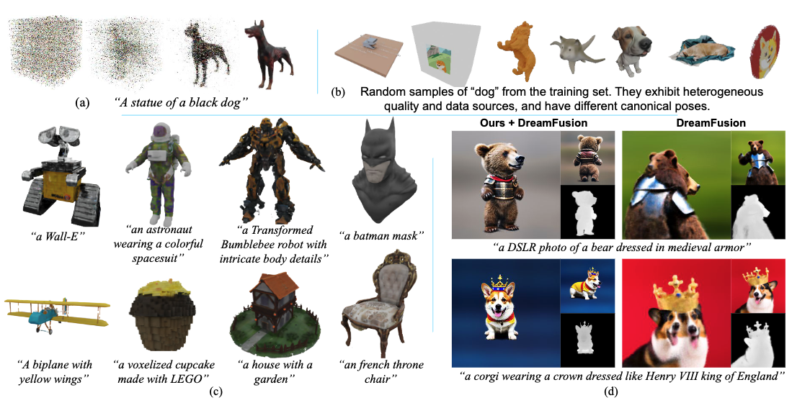 |
Qihao Liu, Yi Zhang, Song Bai, Adam Kortylewski, Alan Yuille CVPR, 2024 paper / arXiv / Project / code Enabling training 3D diffusion model on large-scale noisy 3D data. |
| 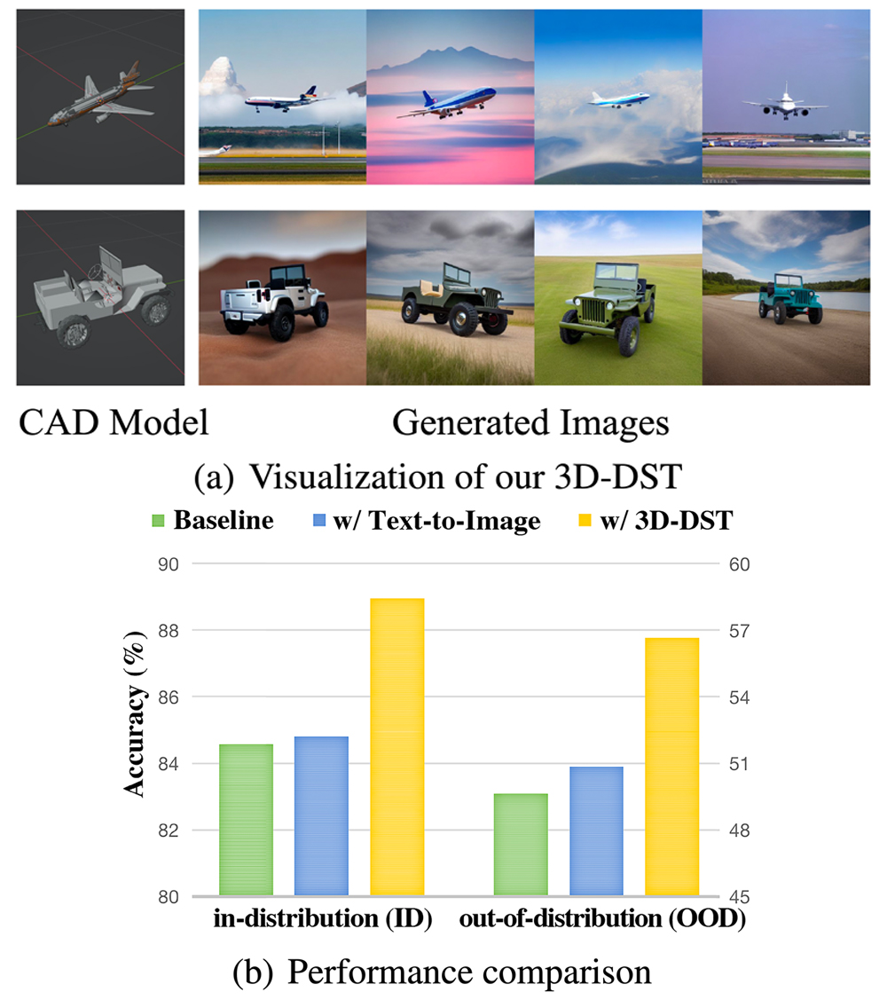 |
Wufei Ma, Qihao Liu, Jiahao Wang, Xiaoding Yuan, Angtian Wang, Yi Zhang, Zihao Xiao, Guofeng Zhang, Beijia Lu, Ruxiao Duan, Yongrui Qi, Adam Kortylewski, Yaoyao Liu, Alan Yuille ICLR, 2024 (Spotlight) paper / arXiv / Project / code Generating images with 3D Annotations using Diffusion Models. |
| 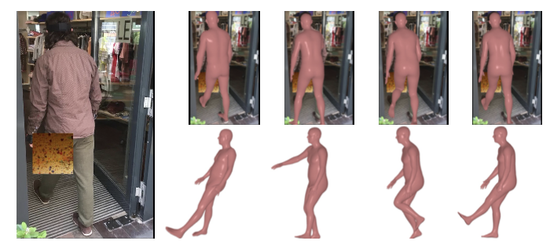 |
Yi Zhang*, Pengliang Ji*, Angtian Wang, Jieru Mei, Adam Kortylewski, Alan Yuille ICCV, 2023 paper / arXiv / Project / code An analysis-by-synthesis approach for 3D human pose estimation that is highly robust to occlusions. |

|
Jiacong Xu, Yi Zhang, ..., Alan Yuille, Adam Kortylewski ICCV, 2023 paper / arXiv / Project / code Animal3D consists of 3379 images collected from 40 mammal species, high-quality annotations of 26 keypoints, and importantly the pose and shape parameters of the SMAL model. We demonstrate that synthetic pre-training is a viable strategy to boost the model performance. |
| 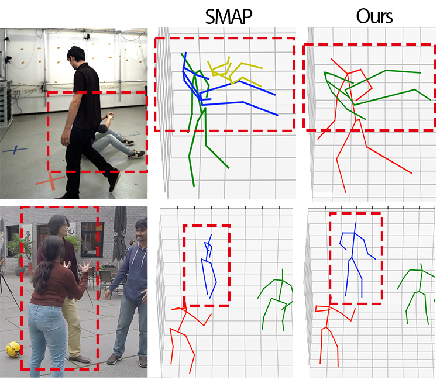 |
Qihao Liu, Yi Zhang, Song Bai, Alan Yuille ECCV, 2022 paper / arXiv / code We explicitly reason about occlusion in multi-person 3D human pose estimation that can generalize better than using pose priors/constraints, data augmentation, or implicit reasoning. |
| 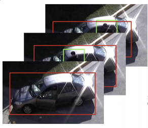 |
Tae Soo Kim*, Jonathan Jones*, Michael Peven*, Zihao Xiao, Jin Bai, Yi Zhang, Weichao Qiu, Alan Yuille, Gregory D. Hager AAAI, 2021 arXiv This compositional approach allows us to reframe fine-grained recognition as zero-shot activity recognition, where a detector is composed “on the fly” from simple first-principles state machines supported by deep-learned components. |
| 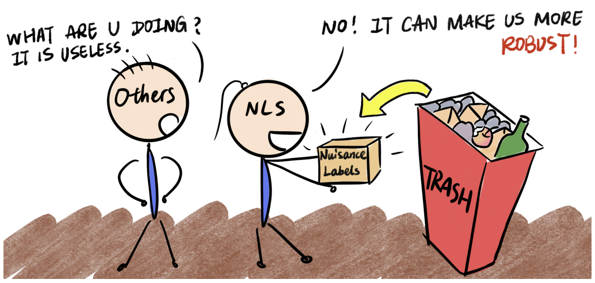 |
Xinyue Wei, Weichao Qiu, Yi Zhang, Zihao Xiao, Alan Yuille ICCVW, 2021 arXiv / supp / poster Improving model robustness to nuisance factors using "free" nuidance labels and adversarial debiasing. |
| 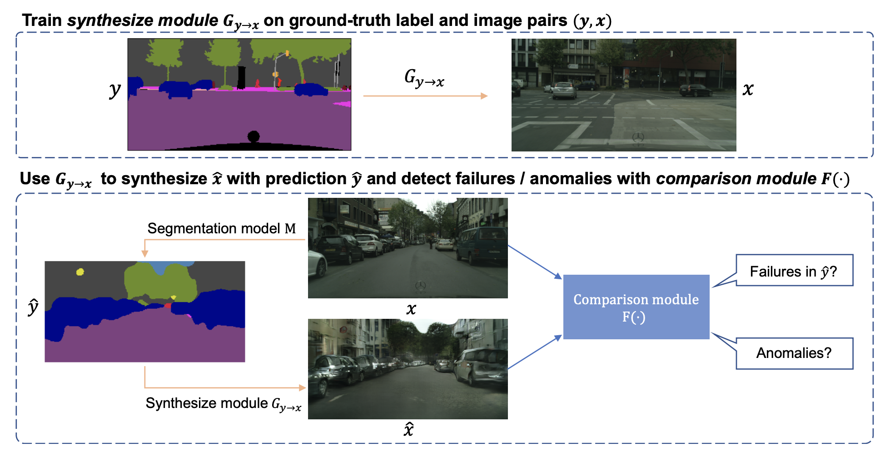 |
Yingda Xia*, Yi Zhang*, Fengze Liu, Wei Shen, Alan Yuille ECCV, 2020 (Oral Presentation) arXiv / code / video A simple unified framework for failure and anomaly detection for segmantic segmentation based on a generative model and a comparison module. |
| 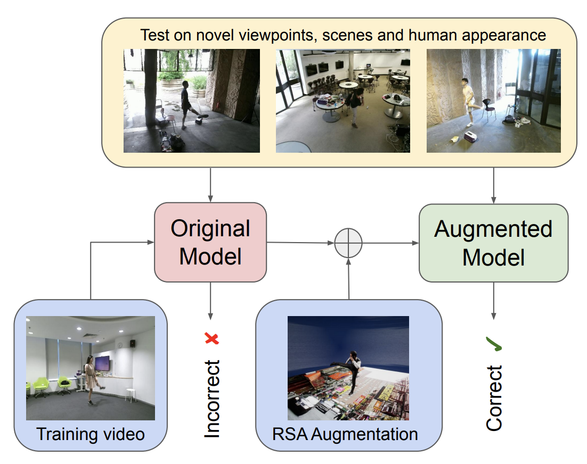 |
Yi Zhang, Xinyue Wei, Weichao Qiu, Zihao Xiao, Gregory D. Hager, Alan Yuille arXiv, 2019 arXiv We use simulated videos to augment real training data to improve model robustness to nuisance factors, e.g. novel viewpoint, change of background and human appearance. |
| 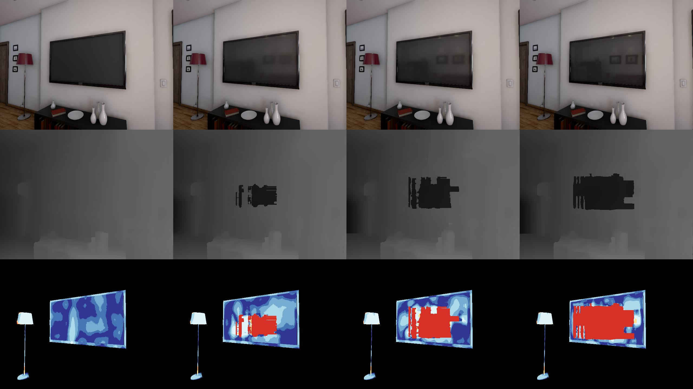 |
Yi Zhang, Weichao Qiu, Qi Chen, Xiaolin Hu, Alan Yuille 3DV, 2018 (Oral Presentation) paper / project page / code We control hazardous factors, e.g. specularity, texturelessness and transparency, to analyze robustness of binocular stereo algorithms. Findings in virtual world is verified in real world. |
| 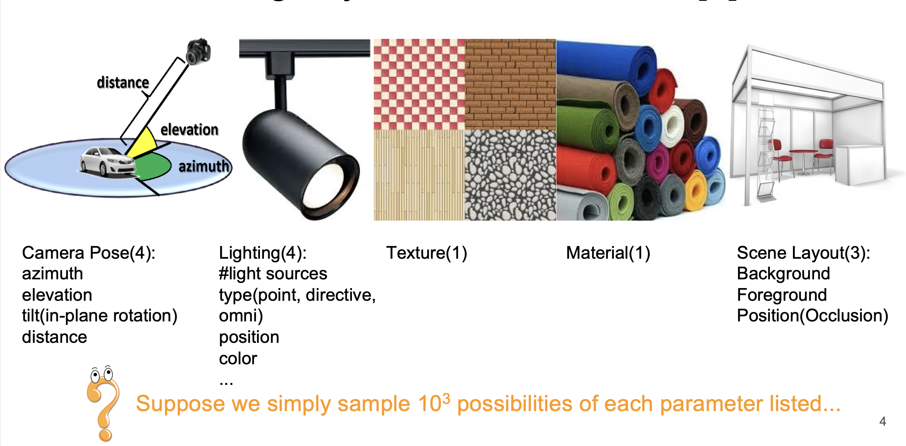 |
Qi Chen, Weichao Qiu, Yi Zhang, Lingxi Xie, Alan Yuille BMVC, 2018 (Oral Presentation) arXiv Efficient online sampling algorithm for active learning from the combinatorially large synthetic data space. |
| 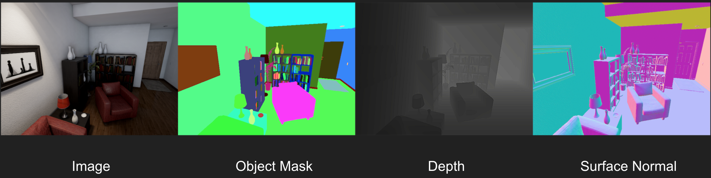 |
Weichao Qiu, Fangwei Zhong, Yi Zhang, Zihao Xiao, Siyuan Qiao, Tae Soo Kim, Yizhou Wang, Alan Yuille ACM Multimedia Open Source Software Competition, 2017 paper / project page An open-source tool for interacting with and obtain data from virtual worlds in Unreal Engine. |
|
The website code is borrowed from Jon Barron's source code. |